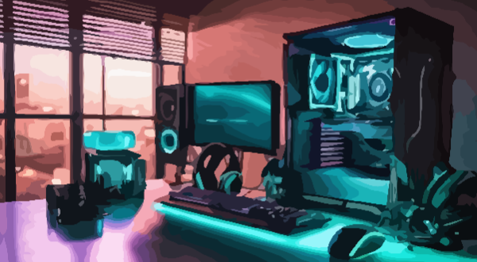

Bienvenue sur le site officiel du Club Informatique !
Ce site permet aux membres de s'inscrire, de consulter la liste des abonnés et d'explorer les projets des membres du site.

L'histoire de l'informatique en bref
L'informatique trouve ses origines dans les premiers calculs mécaniques du XVIIe siècle avec la machine à calculer de Blaise Pascal (1642) et la machine analytique de Charles Babbage au XIXe siècle.
- 1945 : Création de l'ENIAC, premier ordinateur électronique programmable.
- 1950-1960 : Invention du transistor, rendant les ordinateurs plus compacts et rapides.
- 1971 : Apparition des premiers microprocesseurs (Intel 4004).
- 1980 : Révolution du marché grand public par Apple, IBM et Microsoft.
- 1990 : Expansion d'Internet et démocratisation des ordinateurs personnels.
- 2000 : Naissance des smartphones et mobilité informatique.
- Aujourd'hui : Progrès en intelligence artificielle, cloud computing et cybersécurité.
L'informatique continue de façonner nos sociétés, notre manière de travailler et de communiquer, tout en restant au cœur des transformations économiques et culturelles du XXIe siècle.
Projets de nos membres
-
Calculatrice Rudimentaire par Thomas Lemoine
Une simple calculatrice permettant d'effectuer des opérations de base (addition, soustraction, multiplication, division).
Accéder à la calculatrice -
Jeu de Pile ou Face par Nicolas Dupuis
Un jeu aléatoire pour tester votre chance. Devinez si ce sera pile ou face !
Jouer au pile ou face -
Chercheur de Nombres Premiers par Emma Roux
Un outil qui vous permet de générer des nombres premiers jusqu'à une limite donnée.
Trouver des nombres premiers
Rejoignez-nous dès aujourd'hui pour explorer l'univers passionnant de l'informatique avec des personnes qui s'y intéressent comme vous !
S'inscrire